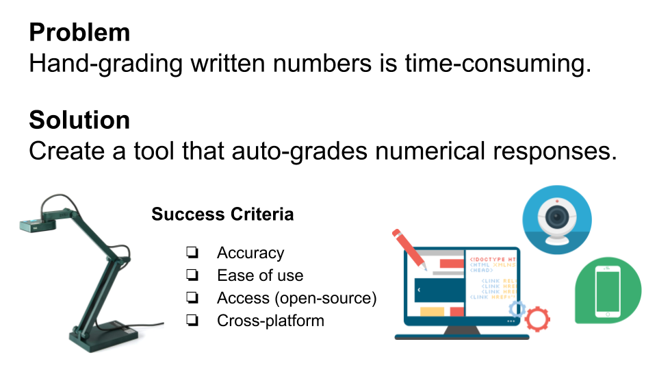
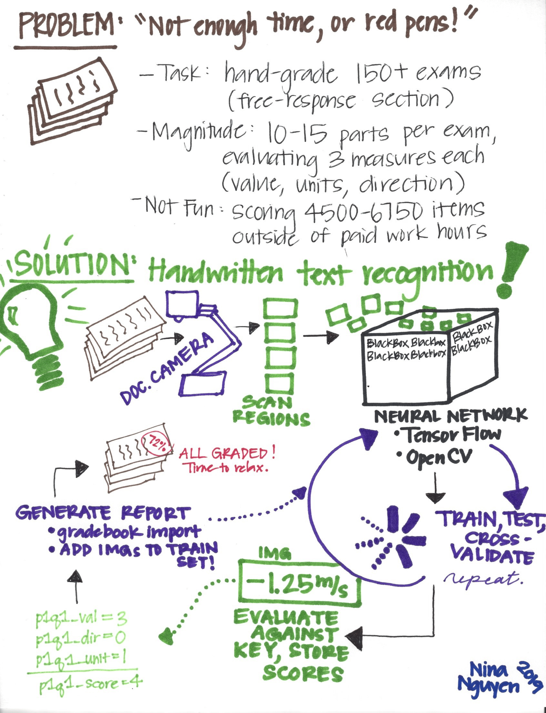

Motivation
Hand-grading free-response questions is a daunting task for many teachers. Current technology allows for autograding of multiple-choice questions (e.g., Illuminate has built-in scoring and gradebook update capabilities). However, OCR-based handwriting recognition is not yet readily available to the public. This tool aims to alleviate the grading burden.
Inspiration
Current digit recognition technology is proprietary.
I aim to create a light-weight, open-source tool with similar functionality.
| Illuminate | Microsoft Ink |
|---|---|
| Illuminate Education software integrates OCR-based autograding and gradebook updates for multiple choice tests. As a former teacher, this tool was invaluable. | Microsoft has powerful on-the-fly penstroke capturing software, Windows Ink, which parses handwritten digits and symbols into mathematical expressions. |
Product Design
backend infrastructure for the final product
| General | Detailed |
|---|---|
|  |
Working Prototype

Data Sources
Detailed instructions for obtaining data is provided here.
| Name | Description | Usage | Resource |
|---|---|---|---|
| MNIST | Well-known repository for handwritten digits | Training | http://yann.lecun.com/exdb/mnist/ |
| HASYv2 | Over 150,000 handwritten characters (including LaTeX mathematical symbols) | Training | https://zenodo.org/record/259444 |
| Kensanata | Over 16,000 labeled handwritten digits (includes gender, country, age) | Testing | https://github.com/kensanata/numbers |
| CROHME | Competition on Recognition of Online Handwritten Mathematical Expressions (InkML format) | Future Directions | https://www.isical.ac.in/~crohme/CROHME_data.html |
Image Pre-processing
Significant pre-processing of raw images is required.
| Stage | Image | Issues |
|---|---|---|
| Raw Image | From the human eye, 4 distinct segments are readily apparent. However, shadows and other subtle artifacts are detected by the computer as objects. | |
| Preprocessed Binary |  |
Results in 4000+ segments (expected 4) due to noisy, non-white background. Dots are each considered separate segments. Requires processing. |
| Postprocessed Binary | Adjusting alpha levels and gaussian blurring reduces noise from raw image. Segmentation ready. | |
| Segmented Image |  |
Proper segmentation detects 4 objects. |
Example Run on the Web App
| Training vs. Actual Images | Backend Preprocessing & Segmentation |
|---|---|
 |
SAMPLE OUTPUT
User takes (or uploads) photo and enters answer.
The student's result is returned.